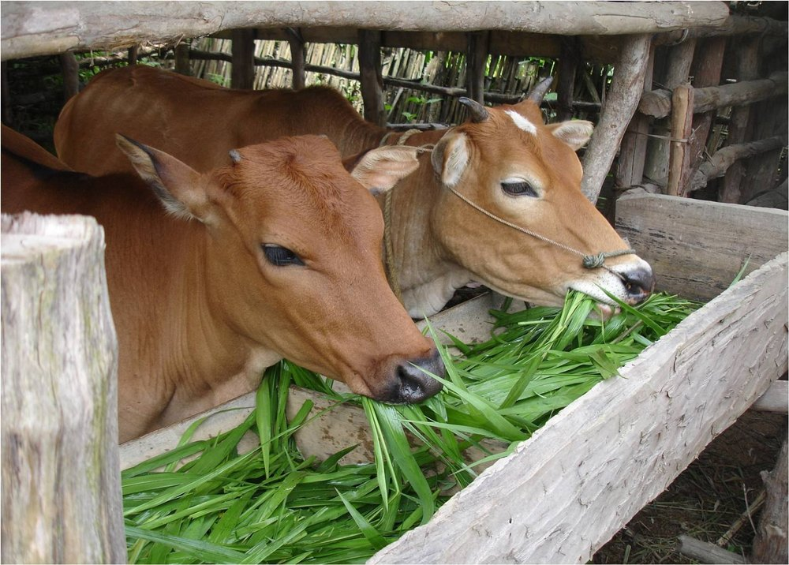
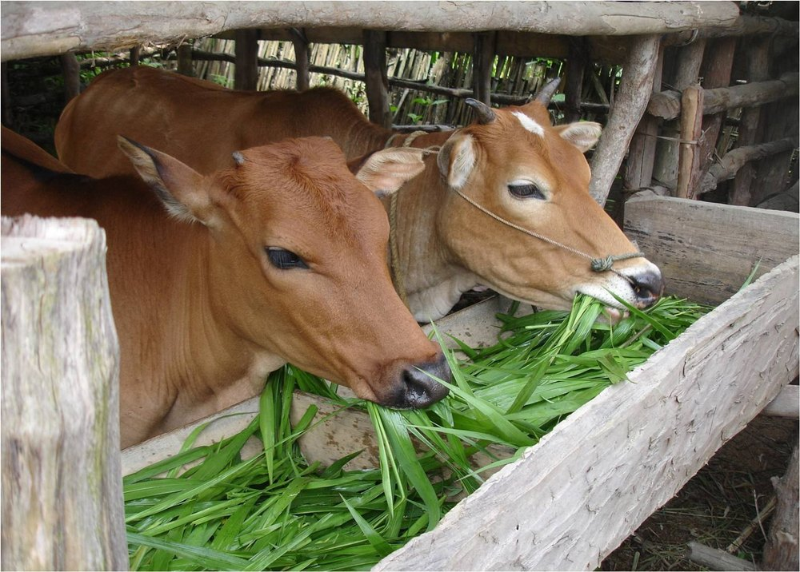

CowCare Hub
CowCare Hub

Cows are gentle animals that silently support human life by providing milk, natural farming support, and ecological balance. They depend entirely on humans for their safety, comfort, and well-being. Proper cow care is not just a responsibility - it is an act of compassion.When cows receive clean shelter, fresh water, medical attention, and gentle handling, they live healthier and stress-free lives. A well-cared cow is more active, disease-free, and emotionally calm. Neglect, poor shelter, or harsh treatment can cause pain, illness, and fear, affecting both their health and productivity. Caring for cows reflects our values as humans. By protecting and caring for them, we preserve compassion, tradition, and a sustainable future. Every small act of care — cleanliness, kindness, and attention — makes a big difference in a cow's life.
Nutrition is the foundation of a cow's health and strength. Just like humans, cows need balanced and nutritious food to stay healthy, active, and happy. Proper nutrition helps cows grow well, fight diseases, and produce quality milk. A cow that receives the right mix of green fodder, dry fodder, clean water, and essential minerals remains energetic and comfortable. Poor or insufficient nutrition can lead to weakness, illness, low milk yield, and long-term health problems.
 



Proper health and hygiene are essential to keep cows safe, healthy, and comfortable. Clean sheds, fresh feeding areas, and regular vaccination help protect cows from diseases and infections. Daily observation and timely veterinary check-ups allow early detection of health problems, while isolating sick cows prevents illness from spreading. Calves need extra care as they are delicate; giving colostrum immediately after birth builds strong immunity. A warm, clean shelter, balanced diet, regular health checks, and gentle handling help calves grow healthy, strong, and stress-free.
At CowCare Hub, we believe that proper care and balanced nutrition are the foundation of cow welfare. Through knowledge and awareness, we encourage responsible practices that ensure cows live healthy, comfortable, and dignified lives.